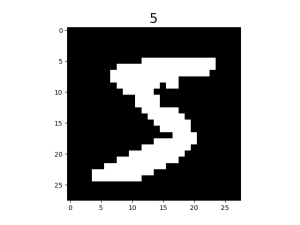
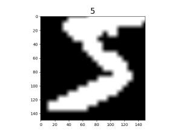

加载图像数据集
Linux Ascend GPU CPU 数据准备 初级 中级 高级

概述
在计算机视觉任务中，图像数据往往因为容量限制难以直接全部读入内存。MindSpore提供的mindspore.dataset模块可以帮助用户构建数据集对象，分批次地读取图像数据。同时，在各个数据集类中还内置了数据处理和数据增强算子，使得数据在训练过程中能够像经过pipeline管道的水一样源源不断地流向训练系统，提升数据训练效果。
此外，MindSpore还支持分布式场景数据加载，用户可以在加载数据集时指定分片数目，具体用法参见数据并行模式加载数据集。
下面，本教程将以加载MNIST数据集[1]为例，演示如何使用MindSpore加载和处理图像数据。
准备
加载数据集
MindSpore目前支持加载图像领域常用的经典数据集和多种数据存储格式下的数据集，用户也可以通过构建自定义数据集类实现自定义方式的数据加载。各种数据集的详细加载方法，可参考编程指南中数据集加载章节。
下面演示使用mindspore.dataset模块中的MnistDataset类加载MNIST数据集。
配置数据集目录，创建MNIST数据集对象。
DATA_DIR = "./MNIST" mnist_dataset = ds.MnistDataset(DATA_DIR, num_samples=6, shuffle=False)
创建迭代器，通过迭代器获取数据。
import matplotlib.pyplot as plt mnist_it = mnist_dataset.create_dict_iterator() data = mnist_it.get_next() plt.imshow(data['image'].asnumpy().squeeze(), cmap=plt.cm.gray) plt.title(data['label'].asnumpy(), fontsize=20) plt.show()
图片展示如下：

此外，用户还可以在数据集加载时传入sampler指定数据采样方式。MindSpore目前支持的数据采样器及其详细使用方法，可参考编程指南中采样器章节。
数据处理
MindSpore目前支持的数据处理算子及其详细使用方法，可参考编程指南中数据处理章节。
下面演示构建pipeline，对MNIST数据集进行shuffle、batch、repeat等操作。
for data in mnist_dataset.create_dict_iterator():
print(data['label'])
输出结果如下：
5
0
4
1
9
2
对数据集进行混洗。
ds.config.set_seed(58) ds1 = mnist_dataset.shuffle(buffer_size=6) for data in ds1.create_dict_iterator(): print(data['label'])
输出结果如下：
4 2 1 0 5 9
对数据集进行分批。
ds2 = ds1.batch(batch_size=2) for data in ds2.create_dict_iterator(): print(data['label'])
输出结果如下：
[4 2] [1 0] [5 9]
对pipeline操作进行重复。
ds3 = ds2.repeat(count=2) for data in ds3.create_dict_iterator(): print(data['label'])
输出结果如下：
[4 2] [1 0] [5 9] [2 4] [0 9] [1 5]
可以看到，数据集被扩充成两份，且第二份数据的顺序与第一份不同。
repeat将对整个数据处理pipeline中已定义的操作进行重复，而不是单纯将此刻的数据集进行复制，故第二份数据执行shuffle后与第一份顺序不同。
数据增强
MindSpore目前支持的数据增强算子及其详细使用方法，可参考编程指南中数据增强章节。
下面演示使用c_transforms模块对MNIST数据集进行数据增强。
导入相关模块，重新加载数据集。
from mindspore.dataset.vision import Inter import mindspore.dataset.vision.c_transforms as transforms mnist_dataset = ds.MnistDataset(DATA_DIR, num_samples=6, shuffle=False)
定义数据增强算子，对数据集执行
Resize和RandomCrop操作。resize_op = transforms.Resize(size=(200,200), interpolation=Inter.LINEAR) crop_op = transforms.RandomCrop(150) transforms_list = [resize_op, crop_op] ds4 = mnist_dataset.map(operations=transforms_list, input_columns="image")
查看数据增强效果。
mnist_it = ds4.create_dict_iterator() data = mnist_it.get_next() plt.imshow(data['image'].asnumpy().squeeze(), cmap=plt.cm.gray) plt.title(data['label'].asnumpy(), fontsize=20) plt.show()
可以看到，原始图片经缩放后被随机裁剪至150x150大小。

参考文献
[1] Y. LeCun, L. Bottou, Y. Bengio, and P. Haffner. Gradient-based learning applied to document recognition.